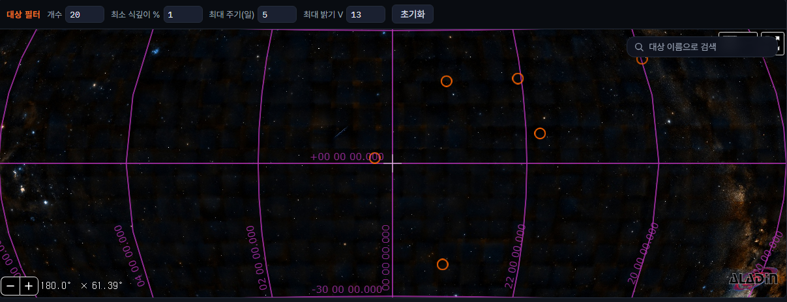
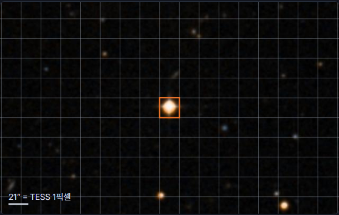
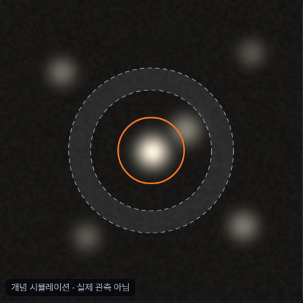
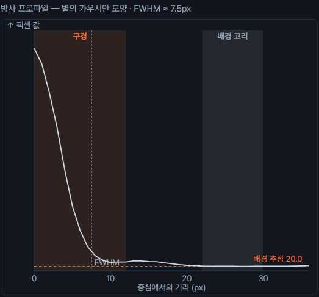
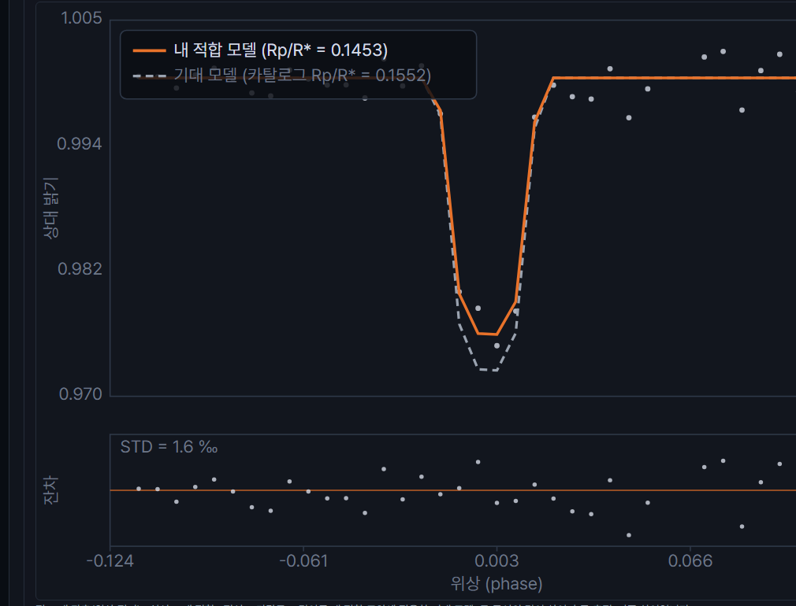

1단계
탐구할 대상 고르기
밝기 변화를 눈으로 확인하려면 어떤 별이어야 합니까?
전천 지도에서 주황 동그라미를 눌러 고릅니다.

배경 = DSS 광학 탐사 · 분홍 선 = 적경·적위 격자 · 주황 동그라미 = 조건에 맞는 대상
위쪽 필터 값을 바꾸면 동그라미가 늘거나 줄어듭니다.
지금은 식 깊이 1 % 이상 · 공전 주기 5일 이하 · 밝기 V 13 이내로 걸러 여섯이 남았습니다.
고른 대상 카탈로그 값
- 이름
- WASP-6 b
- 별자리
- 물병자리
- 적경 · 적위
- 348.157° −22.674°
- 공전 주기
- 3.3610026 d
- 식 깊이
- 2.408 %
- 별빛이 2.4 % 어두워집니다. 후보 여섯 중 가장 큽니다.
- 식 지속
- 2.57 h
- 밝기
- V 11.91
- 숫자가 작을수록 밝은 별입니다.
이 대상을 고르면 수업 시간과 관계있는 것
WASP-6 b 는 TESS Sector 2 자료가 앱 안에 들어 있어 기다리지 않고 바로 계산합니다.
나머지 다섯은 분석할 때 MAST 에서 자료를 받아 오므로 시간이 더 걸립니다.
지도에서 고르기 어려우면 여섯을 나란히 견줘 보세요.
6개 대상 · NASA Exoplanet Archive pscomppars 2026-09-06 조회
2단계
자료의 출처와 관측 조건
이 자료의 출처와 관측 조건은 결과 해석에 어떤 제한을 만들 수 있습니까?
관측 조건 자료가 이렇게 찍혔다
- TESS 섹터
- 2 · 29 · 69 · 96
- 관측이 네 시기로 나뉘어 있습니다. 한 번에 이어 붙일 수 없습니다.
- 케이던스
- 30분 · 10분 · 200초
- 섹터마다 촬영 간격이 다릅니다. 곡선의 촘촘함이 섹터마다 달라집니다.
- 총 프레임
- 26,553 장
- 한 장마다 밝기를 재서 이어 붙인 것이 광도곡선입니다.
- 픽셀 스케일
- 21 ″/px
- 한 픽셀이 하늘의 21초각입니다. 그 안에 든 별빛은 모두 함께 측정됩니다.
- 문헌 공전 주기
- 3.3610026 d
- 이 값으로 시간을 접어야 여러 번의 식이 한 곡선에 겹칩니다.
- 이번에 쓰는 자료
- Sector 2 · 1,245 프레임
결과를 흔들 수 있다고 본 항목
위에서 골라 적으세요. 왜 그렇게 보았는지도 함께 씁니다.

격자 한 칸 = TESS 픽셀 1개 (21″) · 주황 칸 = 탐구 대상
주황 칸 한 칸 안에 별이 몇 개 들어가는지 세어 보세요.
거기 들어간 별빛은 모두 함께 측정됩니다.
자료 출처
- 제공 기관
- NASA TESS / MAST (Mikulski Archive for Space Telescopes)
- 접근 방식
- 앱이 MAST 에 자동으로 요청해 대상 주변 픽셀만 잘라 옵니다 (TESS cutout)
- 기준값 출처
- NASA Exoplanet Archive · pscomppars
- 사진 출처
- DSS 광학 탐사 이미지 · 시야 0.1° · 위치와 크기 비교용
3단계
분석 조건과 모델 가정 확인
아래 조건 중 결과에 가장 큰 영향을 줄 수 있는 항목은 무엇입니까?
하나만 골라, 그것을 바꾸면 결과가 어떻게 달라질지 예상해 보세요.
내가 정하는 값입니다. 오른쪽 두 열이 바꿨을 때 벌어지는 일입니다.
| 조건 | 지금 값 | 크게 하면 | 작게 하면 |
|---|
| 구경 반지름 | 2.5 px |
별빛을 빠짐없이 담지만 하늘빛과 옆 별빛도 함께 들어옵니다 |
잡음은 줄지만 별빛 일부가 밖으로 빠집니다 |
| 배경 고리 안쪽 | 4.0 px |
별빛이 배경 값에 덜 섞입니다 |
별빛이 배경 쪽으로 새어 들어 배경이 과대평가됩니다 |
| 배경 고리 바깥 | 6.0 px |
배경을 넓게 재서 값이 안정됩니다 |
재는 픽셀이 적어져 배경 값이 흔들립니다 |
| 비교성 개수 | 4 |
기준 밝기가 평균되어 안정됩니다 |
한 별의 흔들림이 그대로 결과에 들어옵니다 |
실제 조절은 4단계에서 하고, 바꾼 값은 5단계 비교표에 함께 남습니다

주황 원 = 구경 · 점선 고리 = 배경

가로 = 중심에서의 거리 · 세로 = 픽셀 값
개념을 보여 주는 그림입니다 — 실제 관측 자료가 아닙니다.
구경을 넓히면 오른쪽 그래프의 주황 구간이 넓어지고, 별빛이 거의 없는 바깥까지 함께 더하게 됩니다.
분석 방법과 모델 가정 바꿀 수 없다
- 분석 방법
- 차등측광 — 비교성 여러 개의 평균을 기준 삼아, 목표별의 진짜 밝기 변화만 남깁니다
- 적합 모델
- batman transit model — 행성이 별을 가리는 밝기 변화 곡선을 자료에 맞춥니다
- 분석 구간
- 식의 앞뒤가 함께 들어가야 기준선을 잡습니다. 고른 구간에 따라 적합값이 달라집니다
- 기준값 Rp/R*
- 아카이브의 식 깊이에서 √(식 깊이)로 되짚은 값입니다. 논문이 직접 싣는 값과는 원래 조금 다릅니다
- 카탈로그 값
- 비교 기준일 뿐 정답이 아닙니다. 카탈로그 값에도 오차가 있습니다
예상 적어 두기
4단계에서 실제로 바꿔 본 뒤, 예상과 맞았는지 5단계에서 확인합니다.
6단계
해석하고 기록하기
여기까지 무엇을 했고, 그 결과를 어디까지 믿을 수 있습니까?
1
광도곡선에서 식현상으로 보이는 밝기 감소가 확인되는가?
필수
4단계 그림에서 밝기가 내려갔다 되돌아오는 구간을 보고 고르세요.
2
분석 과정에서 확인한 문제를 선택하세요.
겪지 않은 문제는 고르지 않아도 됩니다.
3
측정값은 NASA Exoplanet Archive 기준값과 어떻게 다른가? 차이의 원인은 무엇인가?
필수
먼저 Rp/R*와 식 깊이가 기준값과 얼마나 다른지 쓰고, 그 차이가 왜 생겼다고 보는지 이어서 쓰세요.
근거는 앞 단계에서 직접 보거나 설정한 값에서 찾으세요.
4
분석을 다시 수행한다면 무엇을 바꾸겠는가?
예: 시야 확대, 비교성 변경, 다른 섹터 분석

4단계에서 만든 광도곡선 · 실선 = 측정 적합 · 점선 = 카탈로그 기대
3번 문항을 쓸 때 이 그림과 아래 기록을 함께 보세요.
지나온 단계
- 1
대상 선택식 깊이가 큰 대상을 골랐다
WASP-6 b · V 11.91
- 2
자료 확인출처와 관측 조건을 보았다
Sector 2 · 1,245 프레임 · 21″/px
- 3
분석 준비조건과 모델 가정을 보았다
구경 2.5 px · 고리 4.0–6.0 px · 비교성 4
- 4
분석·시각화차등측광과 모델 적합을 돌렸다
Rp/R* 0.1453 · 식 깊이 2.112 % · 잔차 1.6 ‰
- 5
기준값 비교아카이브 값과 견주었다
식 깊이 −0.296 %p · Rp/R* −6.4 %
값을 고쳐 쓰려면 해당 단계로 돌아가세요